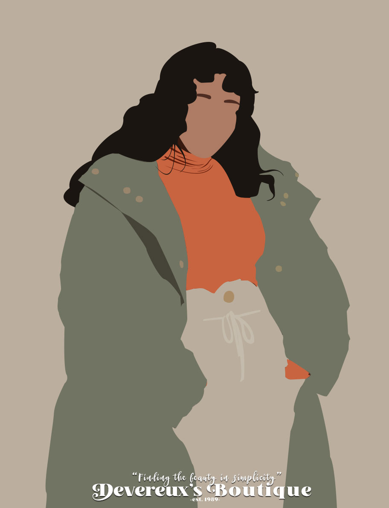
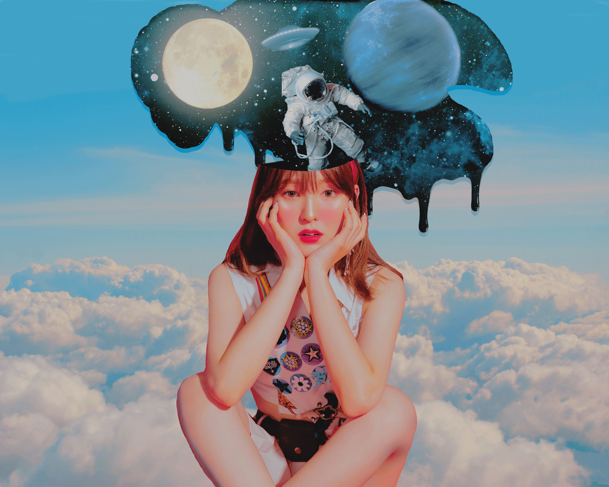
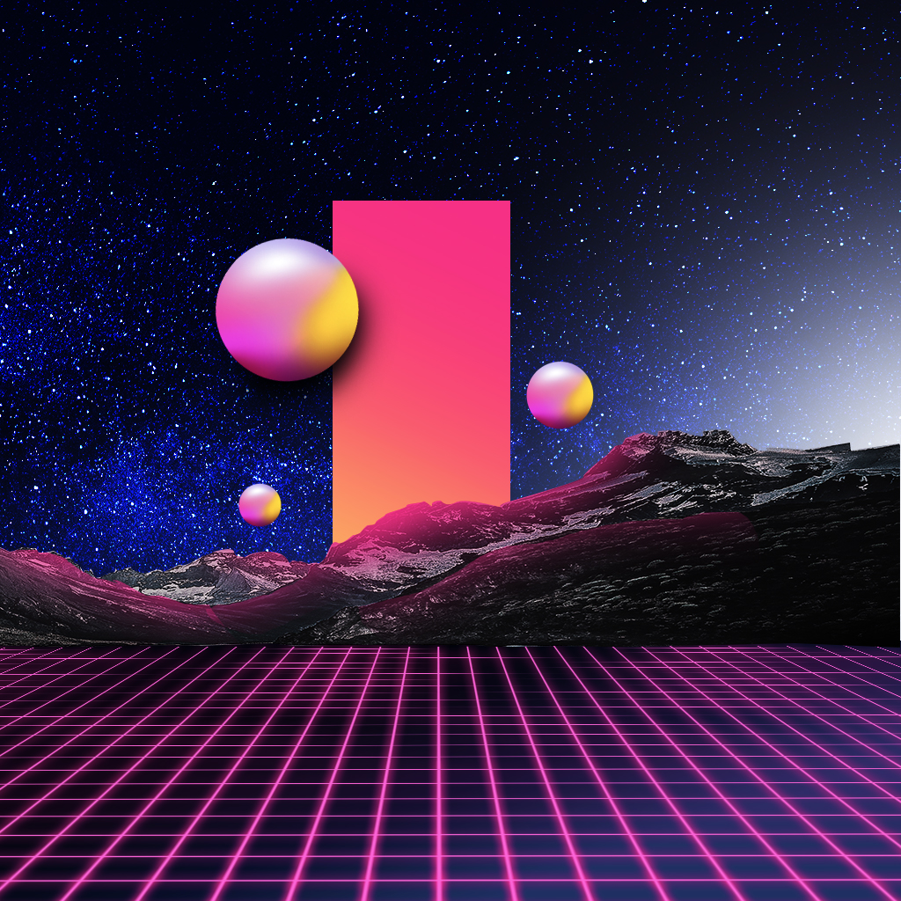

Sara Palmisano
About
My name Sara Palmisano I was born in Wisconsin and moved to Florida when I first started my education.
I'm currently a full time student at Seminole State College.
This is my second year at SSC.I am a Graphic Design major trying to get my AA and
eventually my bachleors.Prior to classes at SSC I taught myself the basics of software like Photoshop and Indesign.
Through my current classes I am learning to hone my current skill set into a more professional set of skills.
Skills
- Graphic Design
- Writing
- User Experience
- Social Media
- Typography
- Adobe Creative apps
- Communication
- Interactive Media
- Marketing
- Basic HTML
Software/Hardware
- Photoshop
- inDesign
- Illustrator
- Desktop
- Graphics Tablet
Social Media/Web
- Github
- Twitter
Work Samples
- 


- 
- 
>